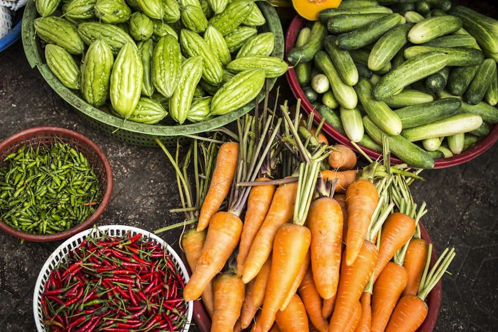

A Raízes do Futuro nasceu da união entre famílias agricultoras que desejavam valorizar a produção orgânica local e ampliar o acesso a alimentos saudáveis.
Hoje, promovemos formações técnicas, aproximamos produtores e clientes e adotamos práticas de GreenIT, priorizando soluções digitais acessíveis, eficientes e com menor impacto ambiental.